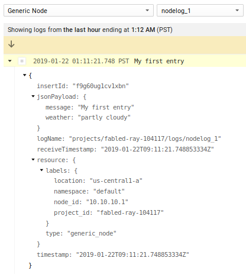
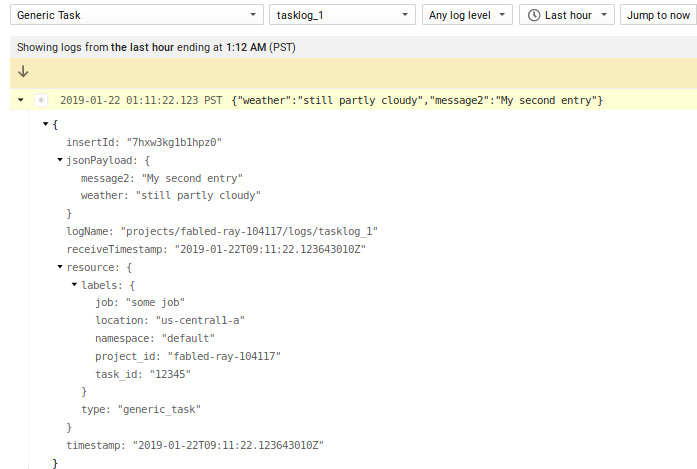
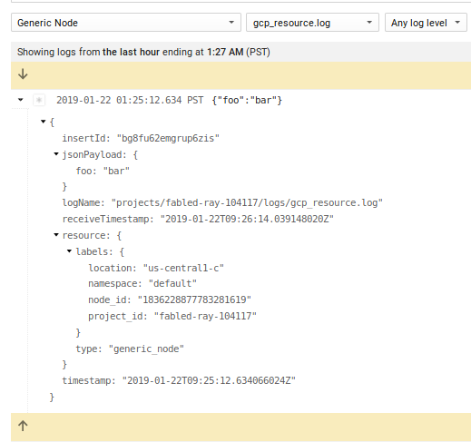
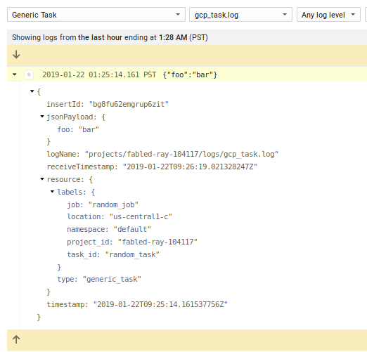
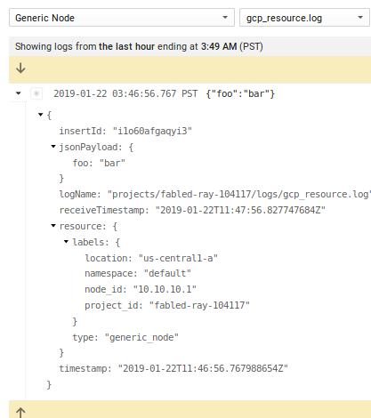
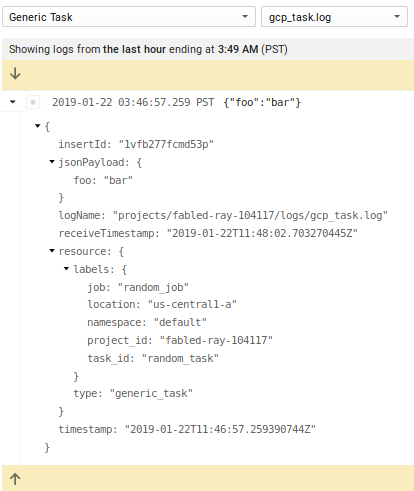
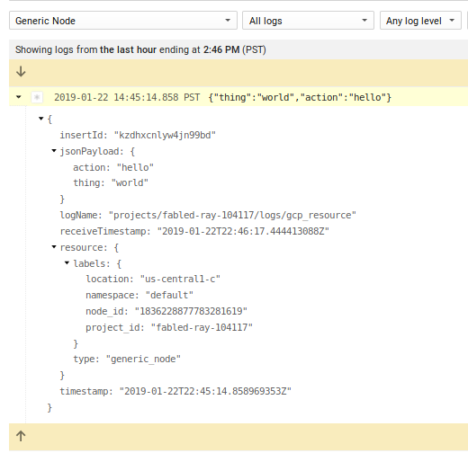
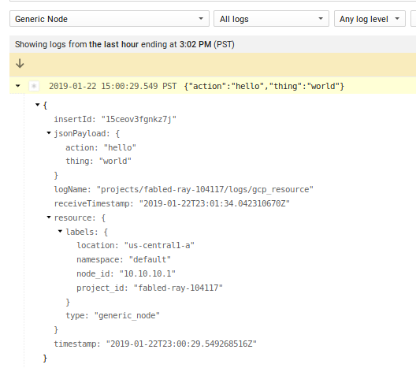
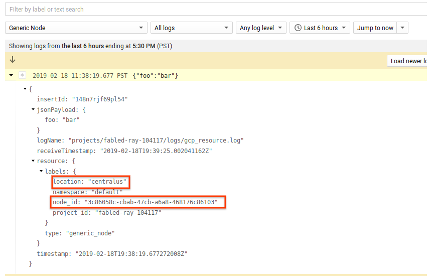

ARTICLES
Writing Developer logs with Google Cloud Logging
Several months ago Google Cloud Logging introduced two new monitored resource types geared towards allowing developers to emit cloud logging messages for their own application centric logs. Pereviously, application logs generally had to be tied to existing predefined monitored_resources such as GCE, GKE, AppEngine, Dataflow and so on. Under those monitoried resources sources, multiple log entries were attributed to specific logNames describing the subsystem like syslog, apache2, nginx, mysql, etc. In the end, the monitored_resource defined the source system and the logName the source application/system.
What if you wanted to emit your own application logs that allows you to define a generic source resource or task and the logName? In other words, have a monitoired resource that specifically doens’t prescribe the source system and process withing that but allows you to define describe your own. Thats where the new generic_node and generic_task resource types come in. These new resource types can be thought of as a generic source system that represents where your application runs (generic_node) and the specific instance of your application (generic_task).
This article will describe the two new types and how to send log to GCP using both the GCP Logging API, the GCP logging agent and finally the off the shelf fluentd agent alone.
So…what are these two new types?
Generic Node
Taken from the documentation:
“A generic node identifies a machine or other computational resource for which no more specific resource type is applicable. The label values must uniquely identify the node.”
under which you can define some lables:
project_id: The identifier of the GCP project associated with this resource, such as “my-project”.location: The GCP or AWS region in which data about the resource is stored. For example, “us-east1-a” (GCP) or “aws:us-east-1a” (AWS).namespace: A namespace identifier, such as a cluster name.node_id: A unique identifier for the node within the namespace, such as a hostname or IP address.
Generic Task
Taken from the documentation:
“A generic task identifies an application process for which no more specific resource is applicable, such as a process scheduled by a custom orchestration system. The label values must uniquely identify the task.”
project_id: The identifier of the GCP project associated with this resource, such as “my-project”.location: The GCP or AWS region in which data about the resource is stored. For example, “us-east1-a” (GCP) or “aws:us-east-1a” (AWS).namespace: A namespace identifier, such as a cluster name.job: An identifier for a grouping of related tasks, such as the name of a microservice or distributed batch job.task_id: A unique identifier for the task within the namespace and job, such as a replica index identifying the task within the job.
NOTE: while you can set the
locationattribute to anything you want, if it not one of the GCE or EC2zones, then logs-to-metrics with that attribute will not work (as of 2/13/19). However, it maybe possible to emit logs and still have metrics if thelocationandvmIDmatches an existing VM running on GCP (I havne’t confirmed that yet though).
Sending Logs
This article will show how to send generic_task and generic_node logs via
Cloud Logging API
- Emit logs via the API from anywhere.
- Requires Authentication Default Credentials.
Cloud Logging Agent
- Supported on GCE/EC2 and uses
google-fluentd, - Can acquire authentication credentials from
metadata severon GCE. - Requires authentication credentials file on EC2.
- Supported on GCE/EC2 and uses
Generic fluentd
- Supported anywhere
fluentdruns. - Requires authentication credentials file.
- Supported anywhere
If you are running on GCE or EC2, the Cloud Logging Agent would be the best bet. If you are already using fluentd elsewhere, just add the fluent-plugin-google-cloud gem then add on the forked out_google_cloud.rb as describe a bit below.
NOTE as of
2/5/19, the changes needed to supportgeneric_nodeandgeneric_taskis NOT included in the fluent plugin for google cloud stackdriver. However, the changes are relatively simple so I’ve forked fluent-plugin-google-cloud and added in the changes here: https://github.com/salrashid123/fluent-plugin-google-cloud. The only real change is to out_google_cloud.rb. I’ll keep sync with upstream every week or so to keep it uptoday. Ofcourse to be clear, this for is NOT supported by google cloud
For refernece, here are some related articles on Cloud Logging I tried out over the year: - Apache/Nginx Structured Logs with Cloud Logging Agent - Flask Logging plugin for Combined logs - Combining correlated Log Lines in Google Stackdriver - auditd agent config for Stackdriver Logging - Envoy Proxy fluentd parser - Fluentd filter plugin for Google Cloud Data Loss Prevention API
Anyway…
Cloud Logging API
The cloud logging API is pretty simple to use. First setup Appplication Default Credentials by running gcloud auth application-default login. Then alter the project_id setting below and execute the script
from google.cloud import logging
from google.cloud.logging.resource import Resource
client = logging.Client()
logger = client.logger('nodelog_1')
r = Resource("generic_node", labels={
'project_id':'fabled-ray-104117',
'location': 'us-central1-a',
'namespace': 'default',
'node_id': '10.10.10.1'})
logger.log_struct(
{"message": "My first entry", "weather": "partly cloudy"}, resource=r
)
logger = client.logger('tasklog_1')
r = Resource("generic_task", labels={
'location': 'us-central1-a',
'namespace': 'default',
'job':'some job',
'task_id': '12345'} )
logger.log_struct(
{"message2": "My second entry", "weather": "still partly cloudy"}, resource=r
)
Gives:
- 
and
- 
Cloud Logging Agent
More common than the API, Cloud Logging reads log files on source systems and emits them to GCP via a logging agent or a fluentd plugin. While on GCE or EC2 instances, the cloud logging agent provides easy installation and several pre-built configuration to emit formatted log to GCP. If the source system is running off the shelf fluentd, the cloud logging integration can be added in by simply applying the flutnet-plugin-google-cloud gem.
First we will install the cloud logging agent on GCE and then the fluent-plugin-google-cloud on generic, stand-alone fluentd. This article does not show the installation steps on AWS and the links above describe its setup.
GCE
1) Create VM with Logging Writer scope enabled
2) ssh to the VM and install the structured logging agent
curl -sSO "https://dl.google.com/cloudagents/install-logging-agent.sh"
sudo bash install-logging-agent.sh --structured
/opt/google-fluentd/embedded/bin/gem list fluent-plugin-google-cloud
fluent-plugin-google-cloud (0.7.5)
export GOOGLE_PLUGIN_VERSION="0.7.5"
wget https://raw.githubusercontent.com/salrashid123/fluent-plugin-google-cloud/master/lib/fluent/plugin/out_google_cloud.rb \
-O /opt/google-fluentd/embedded/lib/ruby/gems/2.4.0/gems/fluent-plugin-google-cloud-$GOOGLE_PLUGIN_VERSION/lib/fluent/plugin/out_google_cloud.rb
3) Add configuration to /etc/google-fluentd/google-fluentd.conf
Note: the
@type httpwas added in just for testing; in real usecases, you will setup the log file source as described at the end of this article.
<source>
@type http
@id input_http
port 8888
</source>
<filter gcp_resource.**>
@type record_transformer
@log_level debug
<record>
"logging.googleapis.com/local_resource_id" "generic_node..default."
</record>
</filter>
<match gcp_resource.**>
@type google_cloud
@log_level debug
</match>
<filter gcp_task.**>
@type record_transformer
@log_level debug
<record>
"logging.googleapis.com/local_resource_id" "generic_task..default.randomjob.randomtaskid"
</record>
</filter>
<match gcp_task.**>
@type google_cloud
@log_level debug
</match>
If you would rather specify the zone and represent the node name you prevfer other than the GCE/EC2/Azure vmid, simply specify that value:
eg:
"logging.googleapis.com/local_resource_id" "generic_node.LOCATION.default.HOST"
Again, if you omit speecifying the location or node, the plugin will attempt to derive those values while running on GCP, AWS or Azure.
4) Restart google-fluentd
service google-fluentd restart
5) Send sample traffic to http test source:
curl -X POST -d 'json={"foo":"bar"}' http://localhost:8888/gcp_resource.log
curl -X POST -d 'json={"foo":"bar"}' http://localhost:8888/gcp_task.log
Give about 30seconds, you should see the lines indicating the logs were transmitted to google
/var/log/google-fluentd/google-fluentd.log
6) Check cloud logging console for output under Generic Node and Generic Task
Note that in the screenshot below, the node_id is actually the VM’s id derived from the GCP Metadataserver. You can use that nodeid to correlate other for this particular VM.


Note that in the configuration above we did not define the node_id or location. If those settings are not specified the google fluentd agent will automatically try to derive the values from GCE or EC2 metadata server. In the example above, the GCE vm_id is uses as the node_id.
Fluentd
The following describes installing fluent-plugin-google-cloud into generic fluentd:
1) Create a service_account and JSON key on a GCP project.
2) Assign IAM role Logging Writer to that service account
3) Download JSON cert and rename the file to application_default_credentials.json
if you want to test this with a local docker image, copy the credential to a folder under the current directory called certs and run
docker run -ti -p 8888:8888 -vpwd/certs/:/etc/google/auth/ debian:stretch /bin/bash
then
apt-get update && apt-get install curl wget sudo make vim gcc gnupg2 -y
(yes, i know, gcc, make; the gem install command there build the fluent library from scratch with grpc support. There has to be a way to package all of it directly without users needed to add those packages; its a TODO for me after i understand ruby a bit better..)
4) Install fluentd on the target system (in this case debian-stretch))
curl -L https://toolbelt.treasuredata.com/sh/install-debian-stretch-td-agent3.sh | sh
5) Install fluent-plugin-google-cloud gem
/opt/td-agent/embedded/bin/gem install fluent-plugin-google-cloud
6) Add certificate and change permisssions
Copy application_default_credentials.json to the target system as /etc/google/auth/application_default_credentials.json and change permissions:
chown td-agent:td-agent /etc/google/auth/application_default_credentials.json
chmod go-rwx /etc/google/auth/application_default_credentials.json
ls -lart /etc/google/auth/application_default_credentials.json
-rw-r----- 1 td-agent td-agent 2332 Jan 16 20:52 /etc/google/auth/application_default_credentials.json
7) Install out_google_cloud.rb from fork repository
/opt/td-agent/embedded/bin/gem list fluent-plugin-google-cloud
fluent-plugin-google-cloud (0.7.5)
so export the verison and copy the fork
export GOOGLE_PLUGIN_VERSION="0.7.5"
wget https://raw.githubusercontent.com/salrashid123/fluent-plugin-google-cloud/master/lib/fluent/plugin/out_google_cloud.rb \
-O /opt/td-agent/embedded/lib/ruby/gems/2.4.0/gems/fluent-plugin-google-cloud-0.7.5/lib/fluent/plugin/out_google_cloud.rb
7) Configure fluentd
Edit /etc/td-agent/td-agent.conf and configurations for generic_node and generic_task:
<filter gcp_resource.**>
@type record_transformer
@log_level debug
<record>
"logging.googleapis.com/local_resource_id" "generic_node.us-central1-a.default.somehost"
</record>
</filter>
<match gcp_resource.**>
@type google_cloud
use_metadata_service false
@log_level debug
</match>
<filter gcp_task.**>
@type record_transformer
@log_level debug
<record>
"logging.googleapis.com/local_resource_id" "generic_task.us-central-1.default.randomjob.randomtaskid"
</record>
</filter>
<match gcp_task.**>
@type google_cloud
use_metadata_service false
@log_level debug
</match>
again, we’re using a test
@type httpsource just as a demo.
8) Restart fluentd
service td-agent restart
Send sample traffic to http listener
curl -X POST -d 'json={"foo":"bar"}' http://localhost:8888/gcp_resource.log curl -X POST -d 'json={"foo":"bar"}' http://localhost:8888/gcp_task.log
tail the logfile at /var/log/td-agent/td-agent.log (wait about a minute until the agent flushes the logs to stackdriver)
9) Check cloud logging console for output under Generic Node and Generic Task


Note If you do not not define the
node_idorlocationand run on GCE or EC2, the plugin will attempt to automatically try to derive the values from GCE or EC2 metadata server for thevm_idas thenode_idandzoneaslocation.
Reading Developer logs from arbitrary files
The example above we setup the cloud logging agent for GCE and the plugin for fluentd but used a test debug handler to source logs (@type http). In the following configuration, we’ll use an actual log file (eg. /var/log/node_logs.log) (which is what you’d likely do in production). The following isn’t anything specific to google-fluentd but rather just plain fluentd configuration for log sources (i’ve added in the section in to show a more realistic example than @type http).
GCE
In this example all we are doing is setting up a log file to track and taged as gcp_resource which in our config is handled by google_cloud as a generic_node:
/etc/google-fluentd/google-fluentd.conf<match gcp_resource.**> @type google_cloud monitored_resource generic_node namespace default </match>/etc/google-fluentd/config.d/mynode.conf<source> @type tail format /(?<action>\w+) (?<thing>\w+)/ tag gcp_resource read_from_head true path /var/log/node_logs.log pos_file /var/lib/google-fluentd/pos/node_logs.pos </source>
note, i’ve seutp a regex parse the logs as JSON as shown in the link below
then
echo "hello world" > /var/log/node_logs.log
gives
- 
For more info see Writing your own parser and Customizing Agent Configuration
Fluentd
Edit /etc/td-agent/td-agent.conf and add:
<match gcp_resource.**>
@type google_cloud
use_metadata_service false
monitored_resource generic_node
location us-central1-a
namespace default
node_id 10.10.10.1
</match>
<source>
@type tail
format /(?<action>\w+) (?<thing>\w+)/
tag gcp_resource
read_from_head true
path /var/log/node_logs.log
pos_file /var/lib/td-agent/node_logs.pos
</source>
(You my need to setup permissions for fluentd on the pos and log file:
chown td-agent:td-agent /var/lib/td-agent/node_logs.pos)
then after restart of td-agent
echo "hello world" > /var/log/node_logs.log
You should see the logs in GCP assuming you setup a JSON certficate file into (/etc/google/auth/application_default_credentials.json)
- 
Summary
You can use these new types to setup logs for your own applications and ingest them into Google Cloud Logging. While you don’t get truly ‘top-level’ resource types (your’e still dealing with the generic_* ones), you are free here to define what system and application that sources logs.
Bonus Level: Azure
The forked repo also supports Azure metadata server (for details, see commit). What this means is if you run fluentd on Azure and specify the path the the json certificate file, the plugin will retrieve the vmID and location attribute from the link-local metadata server. For examlple:
